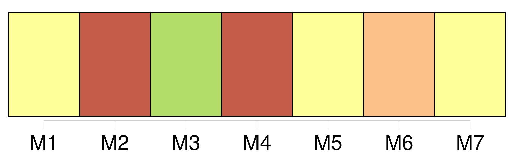
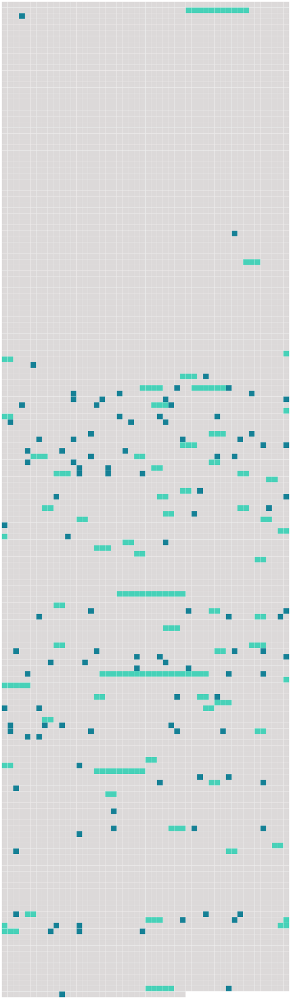

Longueur nb maillons : 168 mentions |
  |
Toutes portaient à leur angle le blason de la famille et l'âge du personnage représenté ; mais, que le chiffre fût bas ou élevé, il n'existait pas une différence bien appréciable entre ces têtes aux lumières jaunes, aux ombres carbonisées, enfumées de vernis et saupoudrées de poussière ; deux ou trois de ces toiles chancies et couvertes d'une fleur de moisissure présentaient des tons de cadavre en décomposition, et prouvaient, de la part [du dernier descendant de ces hommes de race et d'épée] , une indifférence complète à l'endroit des effigies de [ses] nobles aïeux. [46 phrases] [Qui] devait s'asseoir à ce modeste couvert apporté dans ce manoir sans habitants?? [4 phrases] « Bien, bien, Béelzébuth, dit le vieillard en se courbant pour passer à deux ou trois reprises sa main calleuse sur le dos pelé du chat, afin de n'être pas en reste de politesse avec un animal ; je sais que tu m'aimes, et nous sommes assez seuls ici, [mon pauvre maître] et moi, pour n'être pas insensibles aux caresses d'une bête dénuée d'âme, mais qui pourtant semble vous comprendre. [17 phrases] « [Le jeune maître] tarde bien à venir aujourd'hui, murmura Pierre, en voyant à travers les vitres enfumées et jaunes de l'unique fenêtre qui éclairât la cuisine diminuer et s'éteindre la dernière barre lumineuse du couchant au bord d'un ciel rayé de nuages lourds et gros de pluie. Quel plaisir peut [-il] trouver à se promener seul ainsi dans les landes?? [2 phrases] Le battant s'ouvrit ; Pierre se leva, ôta respectueusement son béret, et [le nouveau venu] fit [son] apparition dans la salle, précédé du vieux chien dont nous avons déjà parlé, et qui essayait une gambade et retombait lourdement, appesanti par l'âge. [3 phrases] [Le baron de Sigognac] , car [c'] était bien [le seigneur de ce castel démantelé] [qui] venait d'entrer dans la cuisine, était un jeune homme de vingt-cinq ou vingt-six ans, quoique au premier abord on [lui] en eût attribué peut-être davantage, tant [il] paraissait grave et sérieux. Le sentiment de l'impuissance, qui suit la pauvreté, avait fait fuir la gaieté de [ses] traits et tomber cette fleur printanière qui veloute les jeunes visages. Des auréoles de bistre cerclaient déjà [ses] yeux meurtris, et [ses] joues creuses accusaient assez fortement la saillie des pommettes ; [ses] moustaches, au lieu de se retrousser gaillardement en crocs, portaient la pointe basse et semblaient pleurer auprès de [sa] bouche triste ; [ses] cheveux, négligemment peignés, pendaient par mèches noires au long de [sa] face pâle avec une absence de coquetterie rare dans [un jeune homme] [qui] eût pu passer pour beau, et montraient une renonciation absolue à toute idée de plaire. [1 phrases] Quoique agile et d'une constitution plutôt robuste que faible, [le jeune baron] se mouvait avec une lenteur apathique, comme quelqu'un qui a donné sa démission de la vie.
[Son] geste était endormi et mort, [sa] contenance inerte, et l'on voyait qu'il [lui] était parfaitement égal d'être ici ou là, parti ou revenu. [Sa] tête était coiffée d'un vieux feutre grisâtre, tout bossué et tout rompu, beaucoup trop large, qui [lui] descendait jusqu'aux sourcils et [le] forçait, pour y voir, à relever le nez. [1 phrases] Un col d'une guipure antique, dont tous les jours n'étaient pas dus à l'habileté de l'ouvrier et auquel la vétusté ajoutait plus d'une découpure, se rabattait sur [son] justaucorps dont les plis flottants annonçaient qu'il avait été taillé pour un homme plus grand et plus gros que [le fluet baron] Les manches de [son] pourpoint cachaient les mains comme les manches d'un froc, et [il] entrait jusqu'au ventre dans [ses] bottes à chaudron, ergotées d'un éperon de fer. Cette défroque hétéroclite était celle de feu [son] père, mort depuis quelques années, et dont [il] achevait d'user les habits, déjà mûrs pour le fripier à l'époque du décès de leur premier possesseur. Ainsi accoutré de ces vêtements, peut-être fort à la mode au commencement de l'autre règne, [le jeune baron] avait l'air à la fois ridicule et touchant ; on [l'] eût pris pour [son] propre aïeul. Quoiqu' [il] professât pour la mémoire de [son] père une vénération toute filiale et que souvent les larmes [lui] vinssent aux yeux en endossant ces chères reliques, qui semblaient conserver dans leurs plis les gestes et les attitudes du vieux gentilhomme défunt, ce n'était pas précisément par goût que [le jeune Sigognac] s'affublait de la garde-robe paternelle. [Il] ne possédait pas d'autres vêtements et [avait été] tout heureux de déterrer au fond d'une malle cette portion de [son] héritage. [Ses] habits d'adolescent étaient devenus trop petits et trop étroits. Au moins [il] tenait à l'aise dans ceux de [son] père. Les paysans, habitués à les vénérer sur le dos du vieux baron, ne les trouvaient pas ridicules sur celui [du fils] , et ils les saluaient avec la même déférence ; ils n'apercevaient pas plus les déchirures du pourpoint que les lézardes du château.
[Sigognac] , tout pauvre qu' [il] fût, était toujours à leurs yeux [le seigneur] , et la décadence de cette famille ne les frappait pas comme elle eût fait les étrangers ; et c'était cependant un spectacle assez grotesquement mélancolique que de voir passer [le jeune baron] dans [ses] vieux habits, sur [son] vieux cheval, accompagné de [son] vieux chien, comme ce chevalier de la Mort de la gravure d'Albert Dürer.
[Le Baron] s'assit en silence devant la petite table, après avoir répondu d'un geste de main bienveillant au salut respectueux de Pierre. Celui -ci détacha la marmite de la crémaillère, en versa le contenu sur son pain taillé d'avance dans une écuelle de terre commune qu'il posa devant [le Baron] ; c'était ce potage vulgaire qu'on mange encore en Gascogne, sous le nom de garbure ; puis il tira de l'armoire un bloc de miasson tremblant sur une serviette saupoudrée de farine de maïs et l'apporta sur la table avec la planchette qui la soutenait. Ce mets local avec la garbure graissée par un morceau de lard dérobé, sans doute, à l'appât d'une souricière, vu son exiguïté, formait le frugal repas [du Baron] , [qui] mangeait d'un air distrait entre Miraut et Béelzébuth, tous deux en extase et le museau en l'air de chaque côté de [sa] chaise, attendant qu'il tombât sur eux quelques miettes du festin. De temps à autre [le Baron] jetait à Miraut, qui ne laissait pas arriver le morceau à terre, une bouchée de pain à laquelle [il] avait fait toucher la tranche de lard pour lui donner au moins le parfum de la viande. [1 phrases] Ce maigre régal terminé, [le Baron] parut tomber dans des réflexions douloureuses, ou tout au moins dans une distraction dont le sujet n'avait rien d'agréable. Miraut avait posé sa tête sur le genou de [son maître] et fixait sur [lui] des yeux voilés par l'âge d'une fleur bleuâtre, mais que semblait vouloir percer une étincelle d'intelligence presque humaine. On eût dit qu'il comprenait les pensées [du Baron] et cherchait à [lui] témoigner sa sympathie. Béelzébuth faisait ronfler son rouet aussi bruyamment que Berthe la filandière, et poussait de petits cris plaintifs pour attirer vers lui l'attention envolée [du Baron]
Pierre se tenait debout à quelque distance, immobile comme ces longues et roides statues de granit qu'on voit aux porches des cathédrales, respectant la rêverie de [son maître] et attendant qu' [il] lui donnât quelque ordre. [2 phrases]
D'une famille jadis puissante et riche il ne restait qu' [un rejeton isolé] , errant comme une ombre dans ce manoir peuplé par [ses] aïeux ; d'une livrée nombreuse il n'existait plus qu'un seul domestique, serviteur par dévouement, qui ne pouvait être remplacé ; d'une meute de trente chiens courants il ne survivait qu'un chien unique, presque aveugle et tout gris de vieillesse, et un chat noir servait d'âme au logis désert. [Le Baron] fit signe à Pierre qu' [il] voulait se retirer.
Pierre, se baissant au foyer, alluma un éclat de bois de pin enduit de résine, sorte de chandelle économique qu'emploient les pauvres paysans, et se mit à précéder [le jeune seigneur] ; Miraut et Béelzébuth se joignirent au cortège : la lueur fumeuse de la torche faisait vaciller sur les murailles de l'escalier les fresques pâlies et donnait une apparence de vie aux portraits enfumés de la salle à manger dont les yeux noirs et fixes semblaient lancer un regard de pitié douloureuse sur [leur descendant] [2 phrases]
[Le Baron] s'affaissa sur l'autre, accablé par la solitude, le désœuvrement et l'ennui. [9 phrases] [Le châtelain de ce triste manoir, habitué à ces lugubres symphonies] , n'y faisait aucune attention. [1 phrases]
Ce chat visionnaire, au nom et à la mine diaboliques, eût alarmé un moins brave que [le Baron] ; car il avait l'air de savoir bien des choses apprises dans ses courses nocturnes, à travers les galetas et les chambres inhabitées du castel ; plus d'une fois il avait dû faire, au bout d'un corridor, des rencontres qui eussent blanchi les cheveux d'un homme. [Sigognac] prit sur la table un petit volume dont la reliure ternie portait estampé l'écusson de [sa] famille, et [se mit] à en tourner les feuilles d'un doigt nonchalant. Si [ses] yeux parcouraient exactement les lignes, [sa] pensée était ailleurs ou ne prenait qu'un intérêt médiocre aux odelettes et aux sonnets amoureux de Ronsard, malgré leurs belles rimes et leurs doctes inventions renouvelées des Grecs. Bientôt [il] jeta le livre et [se mit] à déboutonner [son] pourpoint lentement comme un homme qui n'a pas envie de dormir et se couche, de guerre lasse, parce qu'il ne sait que faire et veut essayer de noyer l'ennui dans le sommeil. [1 phrases] [Le jeune Baron] , unique survivant de la famille Sigognac, avait, en effet, bien des motifs de mélancolie. [1 phrases]
Les fiefs, les métairies, les fermes et les terres qui relevaient du château s'étaient envolés pièce à pièce ; et le dernier Sigognac, après des efforts inouïs pour relever la fortune de la famille, efforts sans résultats parce qu'il est trop tard pour boucher les voies d'eau d'un navire lorsqu'il sombre, n'avait laissé à [son fils] que ce castel lézardé et les quelques arpents de terre stérile qui l'entouraient ; le reste avait dû être abandonné aux créanciers et aux juifs. La pauvreté avait donc bercé [le jeune enfant] de ses mains maigres, et [ses] lèvres s'étaient suspendues à une mamelle tarie. Privé tout jeune de [sa] mère morte de tristesse dans ce château délabré, en songeant à la misère qui devait peser plus tard sur [son fils] et [lui] fermer toute carrière, [il] ne connaissait pas les douces caresses et les tendres soins dont la jeunesse est entourée, même dans les familles les moins heureuses. La sollicitude de [son] père, qu' [il] regrettait pourtant, ne s'était guère traduite que par quelques coups de pied au derrière, ou l'ordre de [lui] donner le fouet. En ce moment, [il] s'ennuyait si fort qu' [il] eût été heureux de recevoir une de ces admonestations paternelles dont le souvenir [lui] faisait venir les larmes aux yeux ; car un coup de pied de père à fils, c'est encore une relation humaine et, depuis quatre ans que le Baron dormait allongé sous sa dalle dans le caveau de famille des Sigognac, [il] vivait au milieu d'une solitude profonde.
[Sa] jeune fierté répugnait à paraître parmi la noblesse de la province aux fêtes et aux chasses sans l'équipage convenable à [sa] qualité. Qu'eût -on dit, en effet, de voir [le baron de Sigognac accoutré comme un gueux de l'Hostière ou comme un cueilleur de pommes du Perche] ?? Cette considération [l'] avait empêché d'aller offrir [ses] services comme domestique à quelque prince.
Aussi beaucoup de gens croyaient -ils que les Sigognac étaient éteints, et l'oubli, qui pousse sur les morts encore plus vite que l'herbe, effaçait cette famille autrefois importante et riche, et bien peu de personnes savaient qu'il existât encore [un rejeton de cette race amoindrie] [3 phrases]
[Le Baron] , pour être prêt à tout événement, reboutonna le pourpoint qu' [il] allait quitter et [se dressa] sur [ses] pieds. [2 phrases]
» dit [le jeune homme] en ceignant une épée à lourde coquille de fer qu' [il] détacha du mur et dont [il] boucla le ceinturon à son dernier trou, car la bande de cuir coupée pour la taille du vieux baron eût fait deux fois le tour de celle [du fils] [2 phrases] Quel voyageur malavisé heurtait à cette porte qui ne s'était pas ouverte depuis si longtemps pour un hôte, non par manque de courtoisie de la part [du maître] , mais par l'absence de visiteurs?? [1 phrases]
Ii -Le Chariot De Thespis
Le reflet de la flamme pénétrait [ses] phalanges amincies et les teignait d'un rouge diaphane, en sorte que, quoique ce fût la nuit et qu' [il] marchât suivi d'un chat noir au lieu de précéder le soleil, [il] méritait l'épithète appliquée par le bon Homère aux doigts de l'Aurore. [Il] abaissa la barre de la porte, [entr'ouvrit] le battant mobile, et [se trouva] en face d'un personnage au nez duquel [il] porta [sa] lampe. [5 phrases]
Les saluts accomplis, le burlesque personnage, prévenant sur les lèvres [du Baron] la question qui allait en jaillir, prit la parole d'un ton légèrement emphatique et déclamatoire : [2 phrases]
interrompit assez sèchement [le Baron ennuyé par le verbiage du vieux drôle]
— L'hospitalité pour moi et mes camarades, des princes et des princesses, des Léandres et des Isabelles, des docteurs et des capitaines qui se promènent de bourgs en villes sur le chariot de Thespis, lequel chariot, traîné par des bœufs à la manière antique, est maintenant embourbé à quelques pas de [votre] château.
— Si [je] comprends bien ce que vous dites, vous êtes des comédiens de province en tournée et vous avez dévié du droit chemin? — On ne saurait mieux élucider mes paroles, répondit l'acteur, et [vous] parlez de cire.
Puis -je espérer que [Votre Seigneurie] m'accorde ma requête? — Quoique [ma] demeure soit assez délabrée et que [je] n'aie pas grand'chose à vous offrir, vous y serez toujours un peu moins mal qu'en plein air par une pluie battante. [1 phrases] Pendant ce colloque, Pierre, éveillé par les abois de Miraut, s'était levé et avait rejoint [son maître] sous le porche. [4 phrases] Les bœufs dételés allèrent prendre place à l'écurie à côté du bidet blanc ; les comédiennes sautèrent à bas de la charrette, faisant bouffer leurs jupes fripées, et montèrent, guidées par [Sigognac] , dans la salle à manger, la pièce la plus habitable de la maison. [3 phrases] « [Je] ne puis vous donner que le couvert, dit [le jeune Baron] , [mon] garde-manger ne renferme pas de quoi faire souper une souris.
[Je] vis seul en ce manoir, ne recevant jamais personne, et vous voyez, sans que [je] vous le dise, que la fortune n'habite pas céans. [2 phrases] — Bien parlé, Pédant, exclama le Léandre ; va chercher les provisions, et, si [ce seigneur] le permet et [daigne] souper avec nous, dressons ici même la table du festin. [1 phrases]
» [12 phrases] [Sigognac] , [à qui] cette surprise avait d'abord été désagréable, se laissait aller à une sensation de bien-être inconnue. L'Isabelle, donna Sérafina, et même la soubrette, [lui] troublaient doucement l'imagination et [lui] faisaient l'effet plutôt de divinités descendues sur la terre que de simples mortelles. C'étaient, en effet, de fort jolies femmes et qui eussent préoccupé de moins novices que [notre jeune baron]
Tout cela [lui] produisait l'effet d'un rêve, et [il] craignait à tout moment de se réveiller. [Le Baron] donna la main à donna Sérafina, qu' [il] fit asseoir à [sa] droite. [1 phrases] [Le jeune maître du château] put alors étudier tout à [son] aise les physionomies de [ses] hôtes vivement éclairées et ressortant avec un plein relief.
[Son] examen porta d'abord sur les femmes, dont il ne serait pas hors de propos de tirer ici un léger crayon, tandis que le Pédant pratique une brèche aux remparts du pâté. [7 phrases] Si son habit était fané, sa figure était fraîche, et, d'ailleurs, cette mise paraissait la plus éblouissante du monde [au jeune baron de Sigognac] , peu habitué à de pareilles magnificences, et [qui] n'avait jamais vu que des paysannes vêtues d'une jupe de bure et d'une cape de calmande.
[Il] était, du reste, trop occupé des yeux de la belle pour faire attention aux éraillures de son costume. |
 |
La ressource peut être téléchargée sur la page Ortolang
Si vous avez des questions ou vous voyez des erreurs, merci d'envoyer un mail à silvia.federzoni89@gmail.com
Site développé par S. Federzoni (contact)